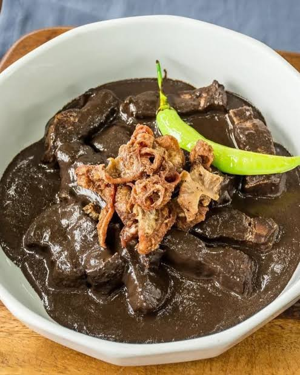

Dinardaraan

Dinardaraan is a traditional Ilocano dish that originated in the Ilocos Region of Northern Philippines. It is the Ilocano version of dinuguan and is made with pork, pork blood, and vinegar. Unlike other versions of dinuguan, Dinardaraan is usually thicker and drier, making it a unique part of Ilocano food culture.
Ingredients
- ½ kilogram pork cheek
- ½ kilogram pork large intestine
- 3 cups fresh pork blood
- ½ cup sukang Iloko
- 2 tablespoons cooking oil
- 1 head garlic, minced
- 2 pieces ginger, minced
- 2 red onions, sliced
- 2 pieces siling panigang
- 2 pieces bay leaves
- ½ teaspoon ground pepper
- 2 sachets MAGGI Magic Sarap
- Water
Step-by-Step Process
1. Simmer the pork cheeks with bay leaves in water until tender. Reserve the broth.
2. Boil the pork intestines separately until tender, then drain.
3. Cut the pork cheeks and intestines into bite-sized pieces.
4. Mix ¼ cup of sukang Iloko with the pork blood.
5. Sauté the garlic, ginger, onions, and siling panigang in oil.
6. Add the pork cheeks, intestines, and remaining vinegar. Cook for a few minutes.
7. Pour in the reserved pork broth and simmer until the meat is tender.
8. Add the pork blood mixture, season with MAGGI Magic Sarap and pepper, and simmer until cooked.